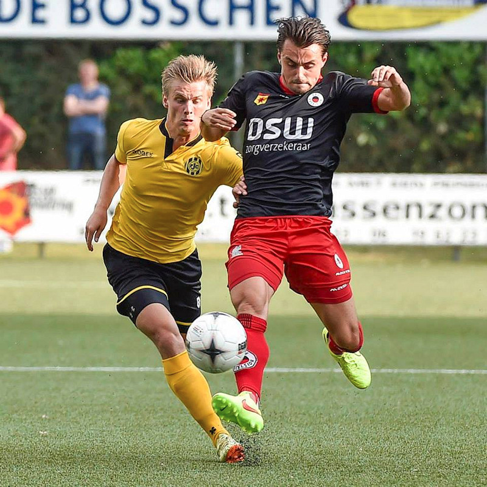

In het duel tussen promovendus en degradant is het na een sterk begin van
Excelsior al vrij snel Roda JC dat door kien positiespel haar wil oplegt aan
de Rotterdammers. Doelman Verbist tikt een stiftbal van Van Mieghem tot
corner. Na het eerste Rotterdamse gevaar schakelt Roda razendsnel om maar
Rutjes kan niet afronden. Na ruim een kwartier is het wederom doelman
Verbist die een schot van Auassar blokt en tot corner kan verlengen. In de
daar op volgende aanval geeft Demouge met een precieze kopbal een assist op
Van Hyfte die met een hard schot de 0-1 binnenschiet in de 18e minuut.
Na de eerste drinkpauze trekt Roda na een halfuur het spel nog meer naar
zich toe. Van Peppen grijpt defensief goed in en voorkomt een tegentreffer
van Excelsior. Doelman Verbist keert een schot van Van Mieghem en geeft
Excelsior geen kans op een gelijkmaker. Na 41 minuten verzorgt Pluim met een
mooie pass de assist op Van Hyfte die zijn tweede treffer maakt. Vlak voor
het rustsignaal valt Letschert uit met een schouderblessure, Roda wacht met
een wissel. In sportpark Bongerd in Barendrecht is de ruststand 0-2.

In het begin van de tweede helft speelt Jacobs zich in de 48e minuut knap
vrij maar zijn schot treft geen doel. Werker vervangt na 49 minuten uit
voorzorg Letschert. Roda blijft de aanval zoeken en op aangeven van Van
Peppen rondt Jacobs in de 50e minuut een aanval af met de derde treffer van
de avond. Roda is op zoek naar meer goals maar wordt onterecht
teruggefloten, Excelsior ontsnapt aan een vierde tegentreffer. Invaller
Werker begaat een overtreding in de eigen zestien en krijgt een penalty
tegen. Voor Excelsior scoort Stans de 1-3 in de 55e minuut.
Na een uur spelen heeft Van Peppen een afgemeten voorzet in huis maar Höcher
kan niet afronden. In de 71e minuut wisselt René Trost verdediger Ramos voor
aanvaller Paulissen. Koud twee minuten in het veld scoort deze de 1-4 na een
assist van Dijkhuizen.
Op het einde van de wedstrijd haalt Roda JC Van Hyfte, Demouge en Pluim naar
de kant en brengt Thong, Bösing en Cicilia als invallers. De 1-4 overwinning
tegen Eredivisionist Excelsior Rotterdam is een prima opsteker voor de
nieuwe formatie van trainer René Trost.
Opstelling Roda JC:
Bram Verbist, Henk Dijkhuizen, Timo Letschert, Guy Ramos, Ard van Peppen,
Nathan Rutjes, Wiljan Pluim, Tom van Hyfte, Marc Höcher, Frank Demouge en
Brian Jacobs.
Opstelling Excelsior:
Deckers; Karami, Fischer, Van Diermen, Brito; Kruys, Auassar, Botaka;
Vermeulen, Van Weert, Van Mieghem
Doelpunten:
18' 0-1 Tom van Hyfte
41' 0-2 Tom van Hyfte
50' 0-3 Brian Jacobs
55' 1-3 Jeff Stans [penalty]
73' 1-4 Mitchel Paulissen
Wissels Roda JC:
49' Daryl Werker vervangt Timo Letschert
71' Mitchel Paulissen vervangt Guy Ramos
78' Rigino Cicilia vervangt Frank Demouge
85' Brian Thong vervangt Tom van Hyfte
85' Kai Bösing vervangt Wiljan Pluim